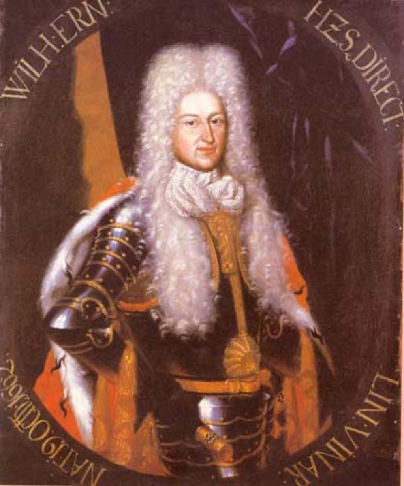

Duke Wilhelm Ernst of Saxe-Weimar

The most contradictory of Bach's employers: the patron who funded his greatest organ decade and the autocrat who ended it with a jail cell.
Wilhelm Ernst ruled his miniature duchy as a Lutheran patriarch — celibate after a failed marriage, obsessively devout (sermon attendance checked, servants quizzed on the sermon's content), imposing early curfews and personal austerity while spending real money on church, school, and chapel music. He esteemed Bach's art genuinely — the salary raises, the organ renovation, the Konzertmeister post created for him all say so — within an iron assumption: servants, however gifted, were his.
The feud with his nephew and co-duke (the two-dukes event) poisoned the court's last years; the succession snub of 1716 and the punitive month's imprisonment of 1717 — for the impertinence of insisting on a better job — completed the portrait. He is the timeline's fullest specimen of absolutist patronage: the same will that built the Himmelsburg's music could, without inconsistency by its own lights, cage the musician. Bach never worked for a duke again; there is no evidence he mourned the species.